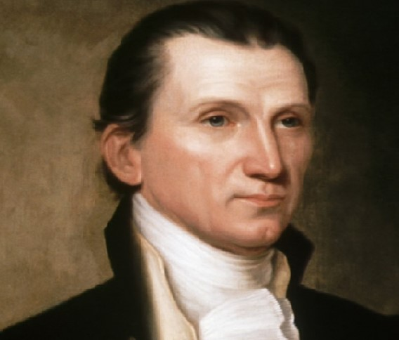

James Monroe was born on (April 28, 1758 – July 4, 1831) was an American statesman, lawyer, diplomat and
Founding Father who served as the 5th president of the United States from 1817 to 1825.
As President Jefferson's special envoy, Monroe helped negotiate the Louisiana Purchase, through which the United
States nearly doubled in size.
As president, Monroe signed the Missouri Compromise, which admitted Missouri as a slave state and banned slavery
from territories north of the 36°30′ parallel.
the course of his presidency, Monroe remained convinced that slavery was wrong and supported private
manumission, but at the same time he insisted that any attempt to promote emancipation would cause more
problems.
Monroe was elected to the Virginia House of Delegates in 1782. After serving on Virginia's Executive
Council,[22] he was elected to the Congress of the Confederation in November 1783 and served in Annapolis until
Congress convened in Trenton, New Jersey in June 1784. He had served a total of three years when he finally
retired from that office by the rule of rotation.
After arriving in France, Monroe addressed the National Convention, receiving a standing ovation for his speech
celebrating republicanism.
resigned from Congress in 1786 to focus on his legal career, and he became an attorney for the state
In Virginia, the struggle over the ratification of the proposed Constitution involved more than a simple clash
between federalists and anti-federalists.
Monroe incurred debts by his lavish and expensive lifestyle and often sold property (including slaves) to pay
them off.
More Info